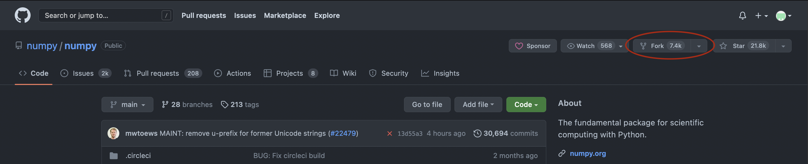

Exercise in pairs
In this exercise will be very similar to what we just did but this time you will be sent out in break-out rooms and work in pairs where you will individually will begin by writing some code, a corresponding test and file an issue. You will then fork your partners repository, fix the issue and submit a pull request. This is exercise is also based on CodeReinery's Full-cycle collaborative workflow. You can look at their website if you are stucked and want an alternative source of information.
What we will be doing
This exercise takes around 20-30 min
- A: Create a repository on GitHub
- B: Commit some code with errors and a corresponding test
- C: Open an issue and report the bug
- D: Your collegue has also done step A-C. Now, fork your collegues repository, clone it and fix the issue
- E: Push your fix to GitHub and merge the pull request
Step 1: Create a new repository on GitHub
Create a new repository where you will host your code and tests and share the url for cloning to your colleague. Important: Make sure that you and your colleague have chosen different names.
Step 2: Clone your repository, add program + tests and commit + push
Begin by cloning your own repository.
You should now add the code you want to test. You are encouraged to come up
with your own example but please make it simple (Or at least the FIX simple)!
If you want you can use the reverse_string.py code from before or you can
write your own program. Below I have also included two other examples that you
could use.
Stack implementation
In this example we will implement the Stack data-structure that you learned about on Tuesday during Marcus lecture. We will do so using a linked list.
Dijkstra's two-stack algorithm
Dijkstra's two-stack is my favorite algorithm (I think). It can be used to parse and correctly evaluate mathematical expression with parenthesis. Its simple but yet powerfull! The example here is very minimal and contains a bug on line 31 that must be fixed. BONUS: run the algorithm with pen and paper (perhaps at a later point) to convince yourself why it works. You can read more about it here and Advent of code had a question on day 18 of 2020 which could be solved with this algorithm: https://adventofcode.com/2020/day/18.
and the test!
Step 3: Add the workflow to your repository
This time you can try adding the workflow manually by creating
.github/workflows/python-app.yml yourself. You can copy the content from the
previous exercise. If you decide to do it this way remember that you need to
add, commit and push the file. Conversely, if you do it directly on GitHub you
will have to pull the changes to your local repository.
Tip
Step 4: Verify that the test ran (but failed) and open issue
Check that pytest ran as you expected by failing to complete the test.
Afterward, create an issue with a reasonable title and you can also add a
description if you wish.
Step 5: Fork and clone the repository of your colleague
This is a completely new step from the last exercise. You should begin by forking the repository of your colleague. Use the url to navigate to the GitHub page and then click fork:

You can read about creating pull requests using a fork here:
and more generally about forking here:
After you have forked the repository you should clone your fork so that you have it locally. This will probably look something like this:
Step 6: Make the test pass!
Now that you have forked the repo of your colleague, it is time to inspect the
issue and fix the code so that the test passes! Before making any commits you
can verify locally with pytest.
Step 7: Create a pull request
You are now ready to create a pull request by commiting and pushing your fix. As long as you reference the issue number in the commit message GitHub and use a keyword like closes (see here for more) GitHub will create it for you.
Once done, you can ask your colleague to review the pull request!
Step 8: Merge pull request
Now going back to your own repository again, review the pull request your colleague suggested. If the tests passed and you are happy with the fix you can merge it to the main branch. You are now done with the exercise!